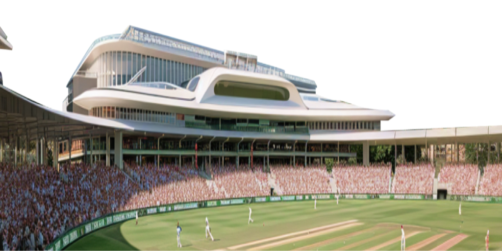
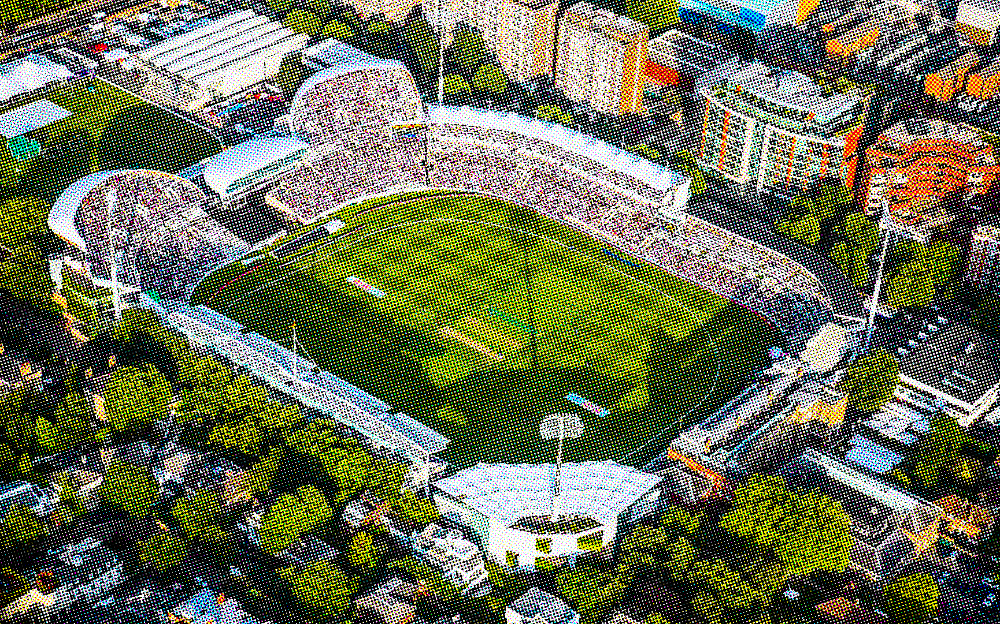
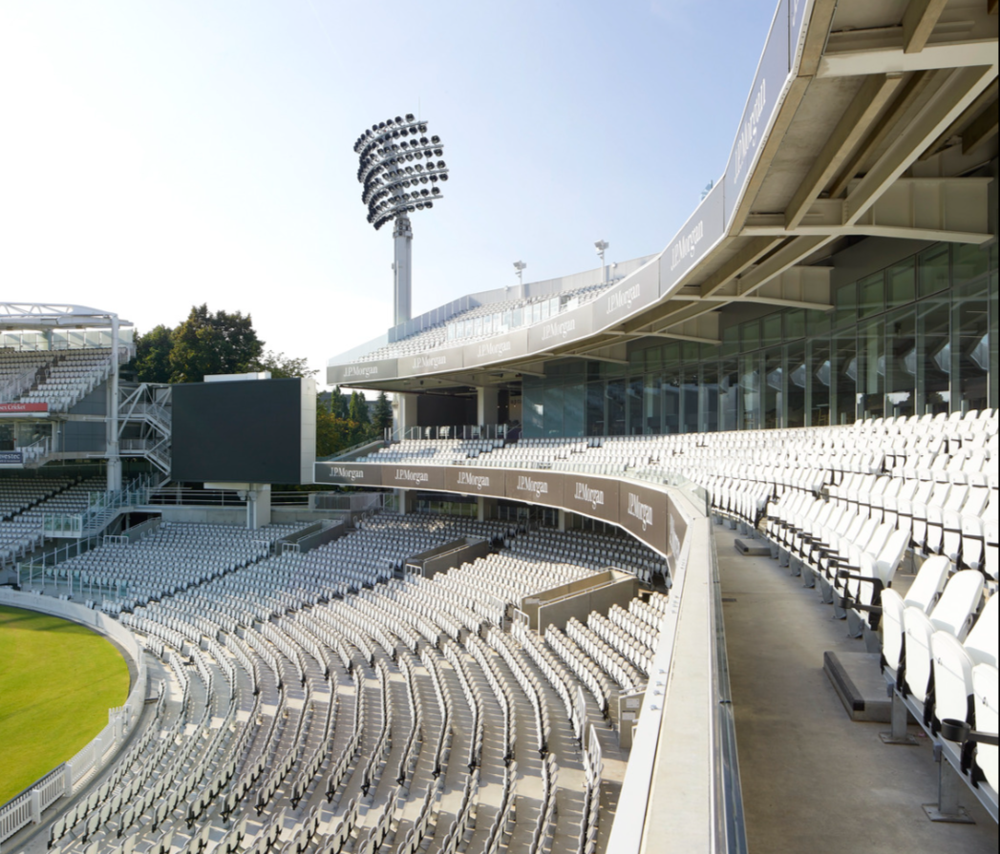

Compton Edrich Stands Lords Cricket Ground
- Year:
- 2021
- City:
- London, UK
- Area:
- 11500 m²
WilkinsonEyre was commissioned by the Marylebone Cricket Club for the redevelopment of the Compton and Edrich stands at Lord’s Cricket Ground.
The completion of the Compton and Edrich stands has ensured the future of Lord’s as a world class sporting venue.

Architecture
We aim to enhance Lord’s unique architecture, blending historic and modern structures to solidify its status as the global Home of Cricket.

The earlier C&E stands, at the ground’s Nursery (eastern) End, had become inadequate to the needs of modern spectators, with restricted sightlines in the lower tiers and upper tiers entirely exposed to the elements.
Creating a harmonious relationship with Future Systems’ Media Centre (1999), the new stands add to a collection of buildings that uphold the ‘Village Green’ ambience which remains at the heart of Lord’s identity.
About project
Our approach enhances Lord’s distinctive architecture
as a global Home of Cricket with historic and contemporary high-quality buildings.
New updates
The new stands complement Future Systems’ Media Centre, contributing to Lord’s identity with its ‘Village Green’ ambience.
Away from the match facing side the design is careful to consider the appearance of the east-facing frontage, creating an improved appearance greeting fans on arrival. A rapid-build design was developed to minimise disruption to the cricket calendar, although much of the construction took place during the 2020 pandemic.
The stands provide a range of seating and hospitality areas, new concourses and circulation areas overlooking the Nursery Ground, public realm and landscaping. The capacity of both stands has increased from 9,000 to 11,600 seats, with much of the original seating retained and reused on sustainability grounds.
Advertisement
WilkinsonEyre appointed to Tavern and Allen Stands at Lord’s Cricket Ground
We are thrilled to announce our appointment by the MCC to redesign the Tavern and Allen Stands at Lord’s Cricket Ground.
Our design proposals seek to enhance the sense of arrival while meeting a clear requirement to modernise and improve the existing facilities.
“We feel privileged to be commissioned to design the latest new structures at Lord’s. Our experience of designing the recent Compton and Edrich stands has given us a special insight and passion for working at such an historic ground, contributing to its continued success as a sporting venue in the best way that we are able.” Jim Eyre, Founding Director at WilkinsonEyre.

Similar